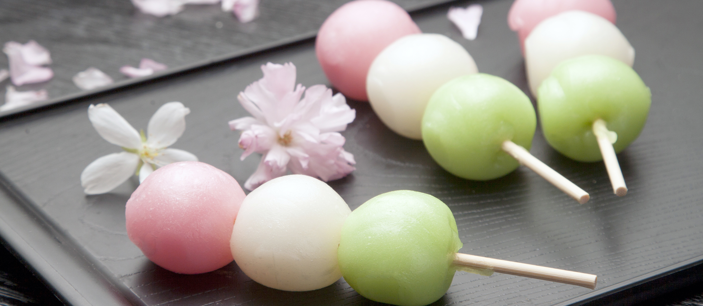

Dango

Description
Firm, colorful rice balls that are sweet and chewy, this Japanese treat is a must this season.
If you like Asian desserts, you should try these yummy mochi donuts and sweet ube ice cream.
Ingredients
- joshinko glutinous rice flour
- shiratamako glutinous rice flour
- powdered sugar
- hot water
- matcha powder
- food coloring
Directions
- Soak the skewers in water
- Mix the rice flour and the hot water until dough consistency
- Divide the dough
- Add food coloring to dough
- Shape the dough into balls
- Bring pot to a boil and cook the balls
- Cool the balls and skewer the dango